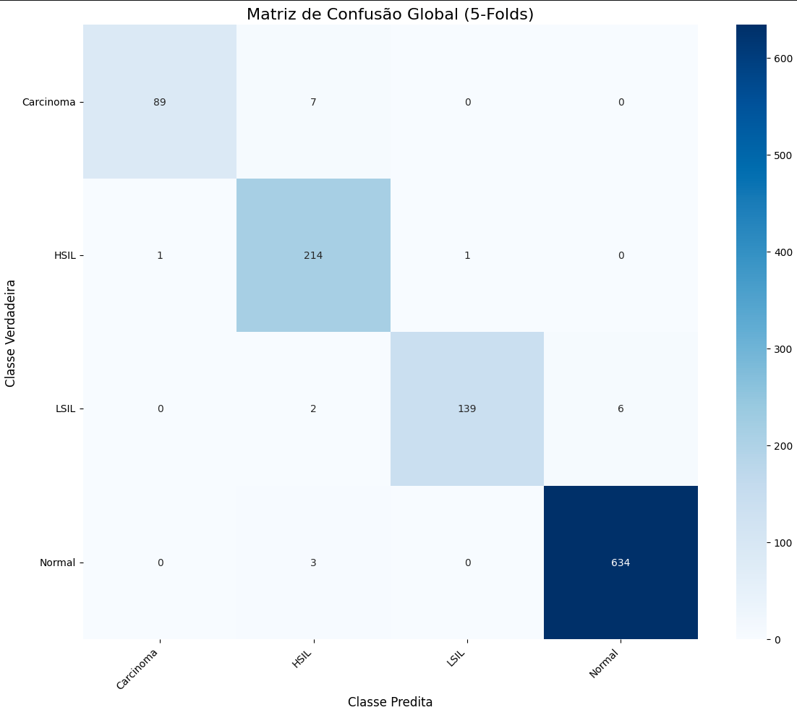
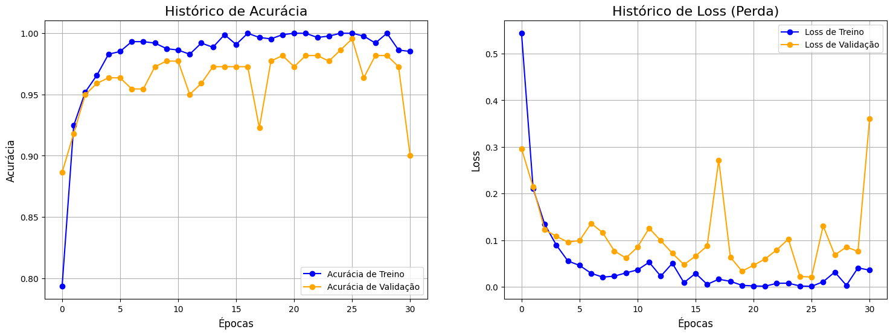

O que é o Sistema Bethesda
O Sistema Bethesda é a linguagem padronizada para relatar exames citopatológicos do colo do útero. Foi criado em 1988, nos Estados Unidos, e revisado em 1991, 2001 e 2014. Antes dele, cada laboratório usava a classificação de Papanicolaou em cinco classes numéricas, que dizia pouco sobre a conduta a tomar e variava de serviço para serviço.
A mudança central foi abandonar números e adotar categorias que se traduzem diretamente em decisão clínica. O laudo passou a informar também se a amostra era adequada para leitura. Uma lâmina com material escasso ou obscurecido por sangue não é um resultado negativo, é uma lâmina que precisa ser repetida.
As quatro categorias abaixo são as que este modelo classifica. Elas formam uma escala ordinal: da ausência de lesão até o carcinoma invasor. Essa ordem importa na leitura dos erros do algoritmo, porque confundir categorias vizinhas tem consequência clínica diferente de confundir categorias distantes.
Em uma frase
Um vocabulário comum que transforma o que se vê ao microscópio numa categoria que orienta conduta clínica, e permite comparar resultados entre laboratórios, cidades e países.
Por que a ordem importa
As categorias formam uma escala. Um erro entre vizinhas costuma adiar um seguimento; um erro entre extremos pode perder um câncer. É por isso que a matriz de confusão diz mais que a acurácia isolada.
NILM
Negativo para lesão intraepitelial ou malignidade
LSIL
Lesão intraepitelial escamosa de baixo grau
HSIL
Lesão intraepitelial escamosa de alto grau
SCC
Carcinoma de células escamosas
Gravidade crescente da esquerda para a direita.
As quatro categorias em detalhe
Cada bloco reúne o que a categoria significa, o que se vê ao microscópio e o que costuma decorrer dela em termos de conduta.
NILM
Negativo para lesão intraepitelial ou malignidade
Negative for Intraepithelial Lesion or Malignancy
O que significa
Categoria de normalidade. O material é adequado e não há células com alterações sugestivas de lesão precursora ou de câncer. Não significa ausência de qualquer achado: infecções, alterações reativas por inflamação, atrofia ou uso de DIU são relatadas dentro de NILM.
O que se vê ao microscópio
Células escamosas superficiais e intermediárias com núcleos pequenos, regulares e cromatina fina. Relação núcleo/citoplasma baixa. Células endocervicais colunares preservadas, em paliçada ou favo de mel.
Conduta habitual
Retorno ao rastreio de rotina, no intervalo previsto pelo programa. Achados infecciosos ou reativos podem motivar tratamento próprio, sem mudar a conduta de rastreio.
É o resultado da grande maioria dos exames de rastreio.
LSIL
Lesão intraepitelial escamosa de baixo grau
Low-grade Squamous Intraepithelial Lesion
O que significa
Reúne o efeito citopático do HPV (coilocitose) e a neoplasia intraepitelial cervical de grau 1 (NIC 1). Representa infecção produtiva pelo vírus, e não ainda uma lesão com autonomia proliferativa.
O que se vê ao microscópio
Células escamosas maduras com núcleos aumentados, mais de três vezes o núcleo de uma célula intermediária normal, hipercromáticos e de contorno irregular. O achado mais característico é o coilócito: halo perinuclear amplo e bem delimitado, com borda citoplasmática densa.
Conduta habitual
Seguimento citológico ou colposcopia, conforme a idade e o protocolo vigente. A maioria das lesões regride espontaneamente em até dois anos, sobretudo em mulheres jovens.
A alteração mais comum entre os exames alterados.
HSIL
Lesão intraepitelial escamosa de alto grau
High-grade Squamous Intraepithelial Lesion
O que significa
Agrupa NIC 2 e NIC 3, incluindo o carcinoma in situ. É a verdadeira lesão precursora: há proliferação de células imaturas com potencial real de progressão para carcinoma invasor se não tratada.
O que se vê ao microscópio
Células menores e imaturas, isoladas ou em agregados sinciciais, com relação núcleo/citoplasma alta, com o núcleo ocupando a maior parte da célula. Cromatina grosseira e irregularmente distribuída, contornos nucleares recortados, citoplasma escasso e frequentemente basofílico.
Conduta habitual
Encaminhamento para colposcopia com biópsia dirigida, e tratamento excisional quando confirmada. É a categoria que o rastreio existe para encontrar.
Menos frequente que LSIL, com impacto clínico bem maior.
SCC
Carcinoma de células escamosas
Squamous Cell Carcinoma
O que significa
Carcinoma invasor de células escamosas: a neoplasia rompeu a membrana basal e invadiu o estroma. Não é mais lesão precursora, e sim câncer estabelecido.
O que se vê ao microscópio
Acentuado pleomorfismo celular e nuclear, nucléolos evidentes, cromatina irregular e grumosa. Podem aparecer células queratinizadas de formas bizarras: fusiformes, em girino, em fibra. O fundo costuma trazer a chamada diátese tumoral: sangue, debris necróticos e material proteináceo granular.
Conduta habitual
Encaminhamento imediato para confirmação histopatológica e estadiamento. Prioridade máxima na fila.
Raro no rastreio organizado, e é justamente esse o objetivo.
O que este modelo não classifica
O Sistema Bethesda completo é mais amplo que estas quatro categorias. Um laudo real também pode registrar:
- ASC-US: atipias em células escamosas de significado indeterminado, quando as alterações existem mas não bastam para caracterizar LSIL.
- ASC-H: atipias escamosas em que não se pode excluir lesão de alto grau.
- AGC: atipias em células glandulares, de origem endocervical ou endometrial.
- AIS: adenocarcinoma in situ.
- Adenocarcinoma: de origem endocervical, endometrial ou extrauterina.
- Avaliação da adequabilidade: satisfatória ou insatisfatória para análise.
Este modelo não classifica essas categorias: foi treinado apenas nas quatro acima. Um campo com atipia glandular ou com material insatisfatório será forçosamente encaixado numa das quatro classes conhecidas, com confiança que pode ser alta e ainda assim errada. É uma limitação de escopo, não um defeito de treinamento, e uma das razões pelas quais a leitura humana continua indispensável.
As descrições acima são material didático desta plataforma. Não substituem as definições oficiais do Sistema Bethesda nem as diretrizes do Ministério da Saúde e do INCA para conduta clínica.
Validação do algoritmo
Validação cruzada estratificada, 5 folds · IARC Digital Atlas e Liquid Based Cytology Pap Smear (Mendeley Data) · arquitetura: ConvNeXt Large
O modelo foi avaliado por validação cruzada estratificada em cinco partições, somando 1.096 imagens. Cada imagem foi classificada exatamente uma vez, por um modelo que não a viu no treino. É um protocolo mais exigente que uma única divisão treino/validação, porque toda a base entra na avaliação e o resultado não depende do sorteio de uma partição específica.
Acurácia global
98,18%
IC 95%: 97,2% – 98,8%
Kappa de Cohen
0,9694
Concordância além do acaso
Imagens avaliadas
1.096
1.076 classificações corretas
Erros
20
Nenhum deles subestimou um caso grave
Matriz de confusão global
Matriz de confusão global: linhas são a referência do citopatologista, colunas a predição da IA.
| Predito pela IA |
|---|
| NILM | LSIL | HSIL | SCC |
|---|
| NILM | 634100% | 00% | 30% | 00% |
|---|
| LSIL | 64% | 13995% | 21% | 00% |
|---|
| HSIL | 00% | 10% | 21499% | 10% |
|---|
| SCC | 00% | 00% | 77% | 8993% |
|---|
Referência (citopatologista) ↑ linhas
Cada linha é a classe de referência e cada coluna, a decisão da rede. A diagonal são os acertos.
O que mais importa não é o total de erros, é a direção deles. Numa ferramenta de triagem, confundir LSIL com NILM adia um seguimento; confundir carcinoma com NILM perde um caso.
Nesta validação, nenhuma das 312 imagens de HSIL ou carcinoma foi classificada como normal. O erro mais frequente foi o oposto, sete carcinomas lidos como HSIL, o que mantém a paciente na via de investigação. Seis campos de LSIL foram para NILM: é o achado que merece mais atenção, porque adia o seguimento.
Figura original do experimento

Rótulos como saíram do treinamento: Carcinoma, HSIL, LSIL, Normal. Ordem alfabética das pastas, que é a mesma dos índices do modelo.
Desempenho por classe
| Classe | Descrição | Precisão | Recall (sensibilidade) | F1 | Imagens |
|---|
| NILM | Negativo para lesão intraepitelial ou malignidade | 99,1% | 99,5% | 99,3% | 637 |
| LSIL | Lesão intraepitelial escamosa de baixo grau | 99,3% | 94,6% | 96,9% | 147 |
| HSIL | Lesão intraepitelial escamosa de alto grau | 94,7% | 99,1% | 96,8% | 216 |
| SCC | Carcinoma de células escamosas | 98,9% | 92,7% | 95,7% | 96 |
Em rastreio, o recall de HSIL e SCC é a métrica decisiva: mede quantos casos graves escapariam. HSIL alcançou 99,1% e carcinoma 92,7%, e as sete imagens de carcinoma não reconhecidas foram classificadas como HSIL, ou seja, permaneceram sinalizadas como alteração de alto grau.
Curvas de treinamento

A acurácia de treino satura cedo e a de validação oscila, comportamento esperado num conjunto curado. O checkpoint publicado corresponde ao melhor ponto de validação, não à última época.
O que estes números ainda não dizem
- A validação é interna aos dois conjuntos públicos usados no treino. Desempenho em lâminas do Laboratório Sebastião Marinho, com outro scanner, outra coloração e outra prevalência, ainda não foi medido. É justamente o objeto da parceria com a SEMSA Manaus.
- A prevalência aqui não é a de um programa de rastreio. No acervo, 42% dos campos são alterados; na rotina, a proporção de exames alterados é bem menor. O valor preditivo positivo em campo será menor que a precisão medida.
- Métricas por imagem não equivalem a métricas por lâmina ou por paciente. Uma lâmina tem centenas de campos, e a decisão clínica é sobre a lâmina.
- O modelo só conhece quatro categorias. Atipias de significado indeterminado (ASC-US, ASC-H), lesões glandulares (AGC, AIS) e amostras insatisfatórias não têm classe própria e serão forçadas para uma das quatro.
- Não há comparação com dupla leitura humana, que é o padrão de referência real.
- Sem aprovação de CEP, nenhum dado de paciente pode ser processado nesta ferramenta.
Conjuntos de dados de treinamento
O modelo foi treinado e validado sobre dois acervos públicos de citologia em meio líquido. Nenhuma imagem de paciente atendido pela rede municipal foi utilizada em qualquer etapa.
IARC
IARC Digital Atlas of Cervical Cytology
Agência Internacional de Pesquisa em Câncer, vinculada à Organização Mundial da Saúde
Atlas digital de referência em citologia cervical, com campos anotados por citopatologistas e usado internacionalmente para ensino.
https://screening.iarc.fr/atlascyto.php
Mendeley Data
Liquid based cytology Pap smear images for multi-class diagnosis of cervical cancer
Institute of Advanced Study in Science and Technology, Índia
Conjunto de imagens de citologia em meio líquido preparadas e anotadas para classificação multiclasse de lesões pré-cancerosas e de câncer cervical.
https://data.mendeley.com/datasets/zddtpgzv63/2
Como citar: HUSSAIN, Elima; MAHANTA, Lipi B.; BORAH, Himakshi; DAS, Chandana Ray. Liquid based-cytology Pap smear dataset for automated multi-class diagnosis of pre-cancerous and cervical cancer lesions. Data in Brief, v. 30, p. 105589, jun. 2020. DOI: https://doi.org/10.1016/j.dib.2020.105589
A combinação dos dois acervos foi o que permitiu chegar às 1096 imagens da validação cruzada. Ela também amplia a variedade de preparo e coloração vista no treino, o que tende a ajudar na generalização. Ainda assim, continuam sendo acervos curados para ensino e pesquisa, com prevalência de lesões bem diferente da rotina de um programa de rastreio.
Ferramentas de apoio ao desenvolvimento
O código desta plataforma e do aplicativo Android foi desenvolvido com apoio do modelo de IA generativa Claude Opus 5, da Anthropic, usado como assistente de programação. A concepção científica, a escolha da arquitetura, o treinamento, a curadoria dos dados, a validação e a revisão de todo o código são de responsabilidade da equipe do projeto.
Registramos esta informação por transparência científica, do mesmo modo que se declara o uso de qualquer outra ferramenta computacional.
Bibliotecas e tecnologias
Modelo e treinamento
PyTorch, torchvision (ConvNeXt Large), Albumentations, scikit-learn (validação cruzada estratificada), NumPy
Interpretabilidade
Grad-CAM implementado sobre o último bloco convolucional; no navegador e no aplicativo, calculado em forma fechada dentro do próprio grafo ONNX
Este site
HTML, CSS e JavaScript sem frameworks; ONNX Runtime Web (WebAssembly) para a inferência no navegador, com o modelo quantizado em 8 bits; fontes Inter e IBM Plex Mono (licença OFL), servidas pelo próprio site. Catálogo: Firebase Authentication e Firestore
Versão anterior e aplicativo
Streamlit, OpenCV, Matplotlib, pandas, Pillow. Aplicativo Android/iOS: Flutter, ONNX Runtime para inferência local no aparelho
Como citar esta plataforma
OLIVEIRA, M. D. L.; MARTINS, T. R.; NAKAMURA, F.; OLIVEIRA, F. G. Sistema de apoio ao diagnóstico citológico em meio líquido assistido por inteligência artificial. Faculdade de Ciências Farmacêuticas e Instituto de Computação, Universidade Federal do Amazonas, em parceria com a Secretaria Municipal de Saúde de Manaus, 2026.
Trabalho em andamento, ainda sem publicação revisada por pares e sem aprovação de Comitê de Ética em Pesquisa.